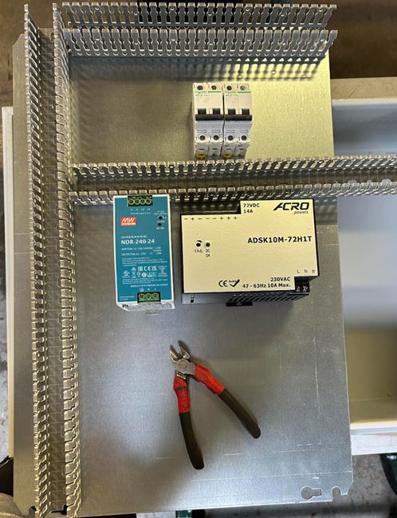
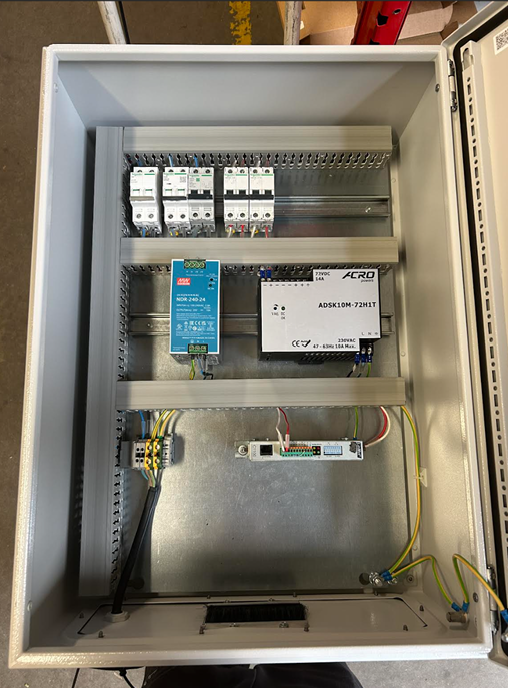

Concevoir la partie GEII d'un système
AC développé : Prouver la pertinence de ses choix technologiques
Expérience support : conception d'un coffret de test pompe lors de mon stage chez SNEF. Cette mission est représentative de la compétence « Concevoir » car elle m'a demandé de partir d'un besoin concret, de choisir des composants adaptés et de justifier techniquement mes décisions.
Cliquer sur cette case pour ouvrir / fermer1. Contexte de l'expérience
Lors de mon stage au sein du Groupe SNEF, j'ai participé à la réalisation d'un coffret électrique destiné à tester des pompes industrielles. Le besoin était de créer un banc de test portable capable d'alimenter un analyseur de pompes avec deux tensions différentes : 24V et 72V, à partir d'une arrivée classique en 230V. Cette demande pouvait sembler simple au départ, mais elle impliquait plusieurs choix techniques importants : choix des alimentations, protections électriques, organisation interne du coffret, section des conducteurs, code couleur, accessibilité et sécurité.
L'enjeu n'était donc pas seulement de câbler des composants. Il fallait concevoir une solution cohérente, compacte, sûre et maintenable. Le coffret devait pouvoir être utilisé dans un contexte industriel, par des techniciens, sans créer de risque électrique ni de difficulté lors des futures interventions.
2. Problématique technique
La problématique principale était la suivante : comment transformer une alimentation 230V en deux sorties fiables de 24V et 72V, tout en assurant la protection des personnes, du matériel et la lisibilité du coffret ? Pour répondre à cette question, il fallait trouver un équilibre entre performance, sécurité, encombrement, facilité de câblage et maintenance.
Un mauvais choix de transformateur aurait pu empêcher l'analyseur de fonctionner correctement. Un mauvais choix de protection aurait pu provoquer une absence de coupure en cas de surcharge. Une mauvaise organisation de la platine aurait rendu les interventions plus longues et plus risquées. C'est pour cela que chaque choix devait être justifié et non réalisé au hasard.
Contraintes principales
- Obtenir deux tensions : 24V et 72V.
- Utiliser une alimentation d'entrée 230V.
- Respecter les règles de câblage industriel.
- Protéger les circuits contre les surcharges.
- Garder un coffret lisible et accessible.
Compétences mobilisées
- Lecture d'un besoin technique.
- Dimensionnement électrique.
- Choix de composants.
- Implantation sur platine.
- Tests au multimètre.
3. Démarche suivie
La première étape a été de comprendre précisément le besoin de l'utilisateur final. Avec mon tuteur, nous avons analysé les tensions nécessaires, les contraintes du coffret et l'usage prévu. Ensuite, nous avons identifié les composants nécessaires : alimentation 24V, module 72V, disjoncteurs, borniers, rails DIN, goulottes et conducteurs.
J'ai ensuite participé à l'implantation des éléments dans le coffret. Cette étape est importante car elle influence directement la qualité finale du système. Les composants doivent être placés de manière logique : les protections accessibles, les alimentations bien ventilées, les borniers bien repérés et les passages de câbles organisés. J'ai veillé à conserver du mou dans les fils afin de faciliter une future modification ou maintenance.
Après le montage, j'ai réalisé les vérifications électriques. Les tests au multimètre ont permis de contrôler la continuité et de mesurer les tensions attendues. C'est lors de cette phase qu'un problème sur le module 72V a été identifié : il ne délivrait pas la tension attendue. Le composant a donc été remplacé, puis retesté.
4. Justification des choix technologiques
Le choix des alimentations était pertinent car elles répondaient directement au besoin fonctionnel : produire du 24V et du 72V de manière stable. Le choix de protections dédiées en amont de chaque alimentation permettait de sécuriser le système en cas de défaut sur une partie du circuit. Les sections de câbles ont été choisies en fonction du courant afin d'éviter les échauffements et les pertes.
L'implantation sur rail DIN et l'utilisation de goulottes rendaient le coffret plus professionnel, plus propre et plus facile à maintenir. Le code couleur permettait également de mieux distinguer les circuits et de faciliter les futures interventions. Ces choix montrent que la conception ne se limite pas au fonctionnement immédiat : elle doit aussi intégrer la maintenance, la sécurité et la lisibilité.
Traces visuelles de l'activité

